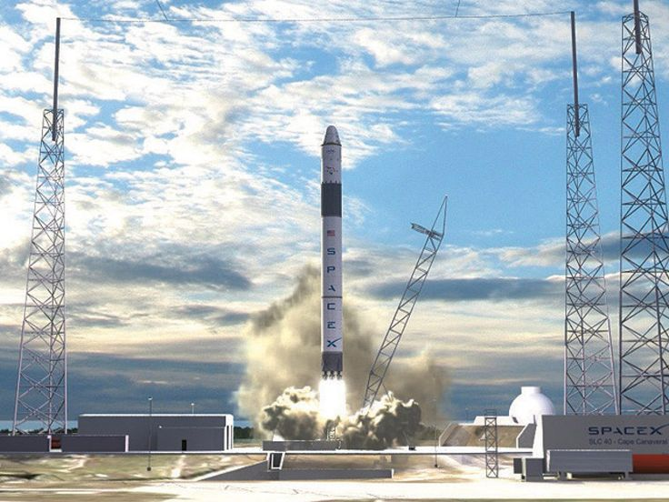

Cargo
Resupply the Space Station
- DELIVERY AND RETURN SERVICES: Dragon is the first commercial spacecraft to deliver cargo to the International Space Station and is currently the only spacecraft capable of returning significant amounts of cargo to Earth.
- VERSATILE CARGO RACKS: The racks are a honeycomb carbon-aluminum construction designed for efficient packing in a zero-gravity environment. They accommodate various standard-size NASA cargo bags and freezers for biological samples.